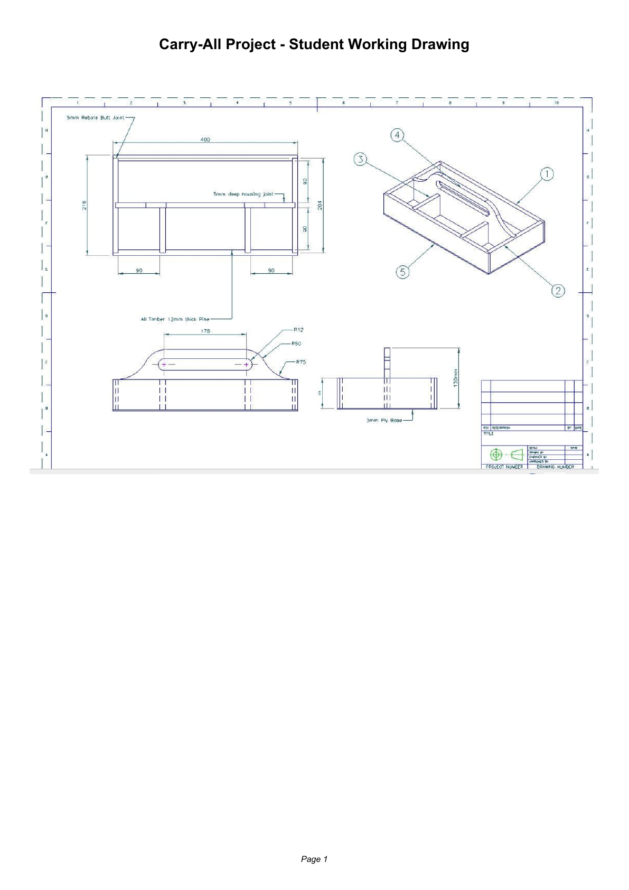

Student evidence
Your work stays on this browser
Each module saves student details, quiz progress and written responses on this device. Use Print / Save PDF at the end of every two-week block. Browser storage is a working copy, not an online submission.
01Plan
02Prepare
03Joint
04Assemble
05Shape
06Finish
07Evaluate
Guided student flow
One controlled decision at a time
Every module follows the same learning rhythm: read three substantial project-specific theory sections, test understanding with guided feedback, write scaffolded responses, save evidence and carry the decisions into the workshop.
Course map
Ten paired-week modules
Open the current module and continue from the work saved in this browser.
01
Weeks 1-2
Brief, plans and workshop safety
Understand the Carry-All brief, read the supplied working drawing and manage risk before material is removed.
Open module02
Weeks 3-4
Materials, culture and responsible use
Select project materials thoughtfully, learn respectfully from place-based timber knowledge and plan to reduce waste.
Open module03
Weeks 5-6
Required construction and comparative joints
Distinguish box-pin and dovetail theory from the assessed rebate-and-housing construction, then practise the required checks on approved scrap.
Open module04
Weeks 7-8
Accurate marking and hand-tool control
Establish reliable references, preserve the line and refine the required rebates and housings through controlled checks.
Open module05
Weeks 9-10
Rebates, housings and dry assembly
Form the structural grooves shown on the plan and test the complete arrangement before adhesive commits the work.
Open module06
Weeks 11-12
Handle design, drawing and shaping
Develop a practical handle, communicate it accurately and shape it in controlled stages under approved workshop procedures.
Open module07
Weeks 13-14
Adhesive assembly and workshop care
Choose the approved adhesive, clamp the structure square and maintain the tools and workspace that support quality.
Open module08
Weeks 15-16
Handling, sequencing and surface preparation
Organise people, materials and hazards through a useful work sequence, then prepare the Carry-All for finish.
Open module09
Weeks 17-18
Finish and final workmanship
Select and apply the approved finish from verified product information, then inspect the product against the brief.
Open module10
Weeks 19-20
Evidence, problem solving and evaluation
Build a traceable folio, explain one genuine correction and evaluate the completed Carry-All with balanced evidence.
Open moduleCore project resource
Carry-All working drawing
The supplied drawing is the authority for the project arrangement and written dimensions. Read the views together, use the written information and never scale a resized image. Ask the teacher before acting on anything unclear.
Open working drawing
2026 formal assessment
Task 2 – Project & Report 2
40%, due Term 4, Week 6. Exact calendar date and issue date: Teacher to confirm.
NSW Stage 5 outcomes
Visible syllabus alignment
The learning and evidence sequence explicitly develops the Industrial Technology outcomes below.
identifies, assesses and manages the risks and WHS issues associated with the Carry-All work sequence
applies design principles when planning the handle, required rebate-and-housing construction and presentation
selects and uses suitable tools, equipment and processes under approved workshop procedures
selects and justifies timber, plywood, adhesive and finish from verified project information
communicates planning, manufacture and evaluation through drawings, captions and folio evidence
works safely and collaboratively during practical activities, handling and shared workshop routines
applies timber knowledge and skills to rebate-and-housing checks, fit-up and problem solving
evaluates the Carry-All against function, quality, sustainability and the approved brief
describes technologies used in hand and industrial timber production
explains social, environmental and cultural considerations connected with timber technologies
Construction and evidence pathway
What students will be doing
- 1Weeks 1–2
Understand the brief, drawing and WHS controls before practical work.
- 2Weeks 3–4
Inspect materials, research respectfully and plan responsible use.
- 3Weeks 5–6
Separate comparative joint theory from the required rebate-and-housing construction.
- 4Weeks 7–8
Mark from references, preserve the line and refine required rebates and housings.
- 5Weeks 9–10
Form rebates and housings, then complete a controlled dry fit.
- 6Weeks 11–12
Design, draw, transfer and shape the central handle.
- 7Weeks 13–14
Plan adhesive assembly, clamp square and care for tools.
- 8Weeks 15–16
Sequence the work, manage handling and prepare the surface.
- 9Weeks 17–18
Select, apply and inspect the approved finish.
- 10Weeks 19–20
Complete evidence, solve problems and evaluate the result.